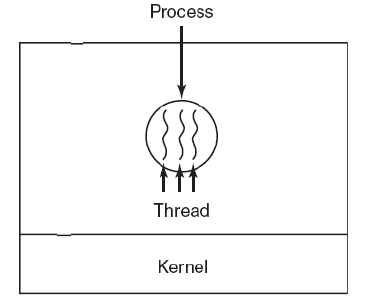

计算机操作系统-进程管理
进程与线程
3# 1. 进程 进程是资源分配的基本单位。
进程控制块 (Process Control Block, PCB) 描述进程的基本信息和运行状态，所谓的创建进程和撤销进程，都是指对 PCB 的操作。
下图显示了 4 个程序创建了 4 个进程，这 4 个进程可以并发地执行。

2. 线程
线程是独立调度的基本单位。
一个进程中可以有多个线程，它们共享进程资源。
QQ 和浏览器是两个进程，浏览器进程里面有很多线程，例如 HTTP 请求线程、事件响应线程、渲染线程等等，线程的并发执行使得在浏览器中点击一个新链接从而发起 HTTP 请求时，浏览器还可以响应用户的其它事件。

3. 区别
Ⅰ 拥有资源
进程是资源分配的基本单位，但是线程不拥有资源，线程可以访问隶属进程的资源。
Ⅱ 调度
线程是独立调度的基本单位，在同一进程中，线程的切换不会引起进程切换，从一个进程中的线程切换到另一个进程中的线程时，会引起进程切换。
Ⅲ 系统开销
由于创建或撤销进程时，系统都要为之分配或回收资源，如内存空间、I/O 设备等，所付出的开销远大于创建或撤销线程时的开销。类似地，在进行进程切换时，涉及当前执行进程 CPU 环境的保存及新调度进程 CPU 环境的设置，而线程切换时只需保存和设置少量寄存器内容，开销很小。
Ⅳ 通信方面
线程间可以通过直接读写同一进程中的数据进行通信，但是进程通信需要借助 IPC。
进程状态的切换

- 就绪状态（ready）：等待被调度
- 运行状态（running）
- 阻塞状态（waiting）：等待资源
应该注意以下内容：
- 只有就绪态和运行态可以相互转换，其它的都是单向转换。就绪状态的进程通过调度算法从而获得 CPU 时间，转为运行状态；而运行状态的进程，在分配给它的 CPU 时间片用完之后就会转为就绪状态，等待下一次调度。
- 阻塞状态是缺少需要的资源从而由运行状态转换而来，但是该资源不包括 CPU 时间，缺少 CPU 时间会从运行态转换为就绪态。
进程调度算法
不同环境的调度算法目标不同，因此需要针对不同环境来讨论调度算法。
1. 批处理系统
批处理系统没有太多的用户操作，在该系统中，调度算法目标是保证吞吐量和周转时间（从提交到终止的时间）。
1.1 先来先服务 first-come first-serverd（FCFS）
非抢占式的调度算法，按照请求的顺序进行调度。
有利于长作业，但不利于短作业，因为短作业必须一直等待前面的长作业执行完毕才能执行，而长作业又需要执行很长时间，造成了短作业等待时间过长。
1.2 短作业优先 shortest job first（SJF）
非抢占式的调度算法，按估计运行时间最短的顺序进行调度。
长作业有可能会饿死，处于一直等待短作业执行完毕的状态。因为如果一直有短作业到来，那么长作业永远得不到调度。
1.3 最短剩余时间优先 shortest remaining time next（SRTN）
最短作业优先的抢占式版本，按剩余运行时间的顺序进行调度。 当一个新的作业到达时，其整个运行时间与当前进程的剩余时间作比较。如果新的进程需要的时间更少，则挂起当前进程，运行新的进程。否则新的进程等待。
2. 交互式系统
交互式系统有大量的用户交互操作，在该系统中调度算法的目标是快速地进行响应。
2.1 时间片轮转
将所有就绪进程按 FCFS 的原则排成一个队列，每次调度时，把 CPU 时间分配给队首进程，该进程可以执行一个时间片。当时间片用完时，由计时器发出时钟中断，调度程序便停止该进程的执行，并将它送往就绪队列的末尾，同时继续把 CPU 时间分配给队首的进程。
时间片轮转算法的效率和时间片的大小有很大关系：
- 因为进程切换都要保存进程的信息并且载入新进程的信息，如果时间片太小，会导致进程切换得太频繁，在进程切换上就会花过多时间。
- 如果时间片过长，那么实时性就不能得到保证。

2.2 优先级调度
为每个进程分配一个优先级，按优先级进行调度。
为了防止低优先级的进程永远等不到调度，可以随着时间的推移增加等待进程的优先级。
2.3 多级反馈队列
一个进程需要执行 100 个时间片，如果采用时间片轮转调度算法，那么需要交换 100 次。
多级队列是为这种需要连续执行多个时间片的进程考虑，它设置了多个队列，每个队列时间片大小都不同，例如 1,2,4,8,..。进程在第一个队列没执行完，就会被移到下一个队列。这种方式下，之前的进程只需要交换 7 次。
每个队列优先权也不同，最上面的优先权最高。因此只有上一个队列没有进程在排队，才能调度当前队列上的进程。
可以将这种调度算法看成是时间片轮转调度算法和优先级调度算法的结合。

3. 实时系统
实时系统要求一个请求在一个确定时间内得到响应。
分为硬实时和软实时，前者必须满足绝对的截止时间，后者可以容忍一定的超时。
进程同步
1. 临界区
对临界资源进行访问的那段代码称为临界区。
为了互斥访问临界资源，每个进程在进入临界区之前，需要先进行检查
// entry section // critical section; // exit section
2. 同步与互斥
- 同步：多个进程因为合作产生的直接制约关系，使得进程有一定的先后执行关系。
- 互斥：多个进程在同一时刻只有一个进程能进入临界区。
3. 信号量
信号量（Semaphore）是一个整型变量，可以对其执行 down 和 up 操作，也就是常见的 P 和 V 操作。
- down : 如果信号量大于 0 ，执行 -1 操作；如果信号量等于 0，进程睡眠，等待信号量大于 0；
- up ：对信号量执行 +1 操作，唤醒睡眠的进程让其完成 down 操作。
down 和 up 操作需要被设计成原语，不可分割，通常的做法是在执行这些操作的时候屏蔽中断。
如果信号量的取值只能为 0 或者 1，那么就成为了 互斥量（Mutex） ，0 表示临界区已经加锁，1 表示临界区解锁。
typedef int semaphore;
semaphore mutex = 1;
void P1() {
down(&mutex);
// 临界区
up(&mutex);
}
void P2() {
down(&mutex);
// 临界区
up(&mutex);
}
使用信号量实现生产者-消费者问题
问题描述：使用一个缓冲区来保存物品，只有缓冲区没有满，生产者才可以放入物品；只有缓冲区不为空，消费者才可以拿走物品。
因为缓冲区属于临界资源，因此需要使用一个互斥量 mutex 来控制对缓冲区的互斥访问。
为了同步生产者和消费者的行为，需要记录缓冲区中物品的数量。数量可以使用信号量来进行统计，这里需要使用两个信号量：empty 记录空缓冲区的数量，full 记录满缓冲区的数量。其中，empty 信号量是在生产者进程中使用，当 empty 不为 0 时，生产者才可以放入物品；full 信号量是在消费者进程中使用，当 full 信号量不为 0 时，消费者才可以取走物品。
注意，不能先对缓冲区进行加锁，再测试信号量。也就是说，不能先执行 down(mutex) 再执行 down(empty)。如果这么做了，那么可能会出现这种情况：生产者对缓冲区加锁后，执行 down(empty) 操作，发现 empty = 0，此时生产者睡眠。消费者不能进入临界区，因为生产者对缓冲区加锁了，消费者就无法执行 up(empty) 操作，empty 永远都为 0，导致生产者永远等待下，不会释放锁，消费者因此也会永远等待下去。
#define N 100
typedef int semaphore;
semaphore mutex = 1;
semaphore empty = N;
semaphore full = 0;
void producer() {
while(TRUE) {
int item = produce_item();
down(&empty);
down(&mutex);
insert_item(item);
up(&mutex);
up(&full);
}
}
void consumer() {
while(TRUE) {
down(&full);
down(&mutex);
int item = remove_item();
consume_item(item);
up(&mutex);
up(&empty);
}
}
4. 管程
使用信号量机制实现的生产者消费者问题需要客户端代码做很多控制，而管程把控制的代码独立出来，不仅不容易出错，也使得客户端代码调用更容易。
c 语言不支持管程，下面的示例代码使用了类 Pascal 语言来描述管程。示例代码的管程提供了 insert() 和 remove() 方法，客户端代码通过调用这两个方法来解决生产者-消费者问题。
monitor ProducerConsumer
integer i;
condition c;
procedure insert();
begin
// ...
end;
procedure remove();
begin
// ...
end;
end monitor;
管程有一个重要特性：在一个时刻只能有一个进程使用管程。进程在无法继续执行的时候不能一直占用管程，否则其它进程永远不能使用管程。
管程引入了 条件变量 以及相关的操作：wait() 和 signal() 来实现同步操作。对条件变量执行 wait() 操作会导致调用进程阻塞，把管程让出来给另一个进程持有。signal() 操作用于唤醒被阻塞的进程。
使用管程实现生产者-消费者问题
// 管程
monitor ProducerConsumer
condition full, empty;
integer count := 0;
condition c;
procedure insert(item: integer);
begin
if count = N then wait(full);
insert_item(item);
count := count + 1;
if count = 1 then signal(empty);
end;
function remove: integer;
begin
if count = 0 then wait(empty);
remove = remove_item;
count := count - 1;
if count = N -1 then signal(full);
end;
end monitor;
// 生产者客户端
procedure producer
begin
while true do
begin
item = produce_item;
ProducerConsumer.insert(item);
end
end;
// 消费者客户端
procedure consumer
begin
while true do
begin
item = ProducerConsumer.remove;
consume_item(item);
end
end;
经典同步问题
生产者和消费者问题前面已经讨论过了。
1. 哲学家进餐问题

五个哲学家围着一张圆桌，每个哲学家面前放着食物。哲学家的生活有两种交替活动：吃饭以及思考。当一个哲学家吃饭时，需要先拿起自己左右两边的两根筷子，并且一次只能拿起一根筷子。
下面是一种错误的解法，如果所有哲学家同时拿起左手边的筷子，那么所有哲学家都在等待其它哲学家吃完并释放自己手中的筷子，导致死锁。
#define N 5
void philosopher(int i) {
while(TRUE) {
think();
take(i); // 拿起左边的筷子
take((i+1)%N); // 拿起右边的筷子
eat();
put(i);
put((i+1)%N);
}
}
为了防止死锁的发生，可以设置两个条件：
- 必须同时拿起左右两根筷子；
- 只有在两个邻居都没有进餐的情况下才允许进餐。
#define N 5
#define LEFT (i + N - 1) % N // 左邻居
#define RIGHT (i + 1) % N // 右邻居
#define THINKING 0
#define HUNGRY 1
#define EATING 2
typedef int semaphore;
int state[N]; // 跟踪每个哲学家的状态
semaphore mutex = 1; // 临界区的互斥，临界区是 state 数组，对其修改需要互斥
semaphore s[N]; // 每个哲学家一个信号量
void philosopher(int i) {
while(TRUE) {
think(i);
take_two(i);
eat(i);
put_two(i);
}
}
void take_two(int i) {
down(&mutex);
state[i] = HUNGRY;
check(i);
up(&mutex);
down(&s[i]); // 只有收到通知之后才可以开始吃，否则会一直等下去
}
void put_two(i) {
down(&mutex);
state[i] = THINKING;
check(LEFT); // 尝试通知左右邻居，自己吃完了，你们可以开始吃了
check(RIGHT);
up(&mutex);
}
void eat(int i) {
down(&mutex);
state[i] = EATING;
up(&mutex);
}
// 检查两个邻居是否都没有用餐，如果是的话，就 up(&s[i])，使得 down(&s[i]) 能够得到通知并继续执行
void check(i) {
if(state[i] == HUNGRY && state[LEFT] != EATING && state[RIGHT] !=EATING) {
state[i] = EATING;
up(&s[i]);
}
}
2. 读者-写者问题
允许多个进程同时对数据进行读操作，但是不允许读和写以及写和写操作同时发生。
一个整型变量 count 记录在对数据进行读操作的进程数量，一个互斥量 count_mutex 用于对 count 加锁，一个互斥量 data_mutex 用于对读写的数据加锁。
typedef int semaphore;
semaphore count_mutex = 1;
semaphore data_mutex = 1;
int count = 0;
void reader() {
while(TRUE) {
down(&count_mutex);
count++;
if(count == 1) down(&data_mutex); // 第一个读者需要对数据进行加锁，防止写进程访问
up(&count_mutex);
read();
down(&count_mutex);
count--;
if(count == 0) up(&data_mutex);
up(&count_mutex);
}
}
void writer() {
while(TRUE) {
down(&data_mutex);
write();
up(&data_mutex);
}
}
The first case may result Writer to starve. This case favous Writers i.e no writer, once added to the queue, shall be kept waiting longer than absolutely necessary(only when there are readers that entered the queue before the writer).
int readcount, writecount; //(initial value = 0)
semaphore rmutex, wmutex, readLock, resource; //(initial value = 1)
//READER
void reader() {
<ENTRY Section>
down(&readLock); // reader is trying to enter
down(&rmutex); // lock to increase readcount
readcount++;
if (readcount == 1)
down(&resource); //if you are the first reader then lock the resource
up(&rmutex); //release for other readers
up(&readLock); //Done with trying to access the resource
<CRITICAL Section>
//reading is performed
<EXIT Section>
down(&rmutex); //reserve exit section - avoids race condition with readers
readcount--; //indicate you're leaving
if (readcount == 0) //checks if you are last reader leaving
up(&resource); //if last, you must release the locked resource
up(&rmutex); //release exit section for other readers
}
//WRITER
void writer() {
<ENTRY Section>
down(&wmutex); //reserve entry section for writers - avoids race conditions
writecount++; //report yourself as a writer entering
if (writecount == 1) //checks if you're first writer
down(&readLock); //if you're first, then you must lock the readers out. Prevent them from trying to enter CS
up(&wmutex); //release entry section
<CRITICAL Section>
down(&resource); //reserve the resource for yourself - prevents other writers from simultaneously editing the shared resource
//writing is performed
up(&resource); //release file
<EXIT Section>
down(&wmutex); //reserve exit section
writecount--; //indicate you're leaving
if (writecount == 0) //checks if you're the last writer
up(&readLock); //if you're last writer, you must unlock the readers. Allows them to try enter CS for reading
up(&wmutex); //release exit section
}
We can observe that every reader is forced to acquire ReadLock. On the otherhand, writers doesn’t need to lock individually. Once the first writer locks the ReadLock, it will be released only when there is no writer left in the queue.
From the both cases we observed that either reader or writer has to starve. Below solutionadds the constraint that no thread shall be allowed to starve; that is, the operation of obtaining a lock on the shared data will always terminate in a bounded amount of time.
int readCount; // init to 0; number of readers currently accessing resource
// all semaphores initialised to 1
Semaphore resourceAccess; // controls access (read/write) to the resource
Semaphore readCountAccess; // for syncing changes to shared variable readCount
Semaphore serviceQueue; // FAIRNESS: preserves ordering of requests (signaling must be FIFO)
void writer()
{
down(&serviceQueue); // wait in line to be servicexs
// <ENTER>
down(&resourceAccess); // request exclusive access to resource
// </ENTER>
up(&serviceQueue); // let next in line be serviced
// <WRITE>
writeResource(); // writing is performed
// </WRITE>
// <EXIT>
up(&resourceAccess); // release resource access for next reader/writer
// </EXIT>
}
void reader()
{
down(&serviceQueue); // wait in line to be serviced
down(&readCountAccess); // request exclusive access to readCount
// <ENTER>
if (readCount == 0) // if there are no readers already reading:
down(&resourceAccess); // request resource access for readers (writers blocked)
readCount++; // update count of active readers
// </ENTER>
up(&serviceQueue); // let next in line be serviced
up(&readCountAccess); // release access to readCount
// <READ>
readResource(); // reading is performed
// </READ>
down(&readCountAccess); // request exclusive access to readCount
// <EXIT>
readCount--; // update count of active readers
if (readCount == 0) // if there are no readers left:
up(&resourceAccess); // release resource access for all
// </EXIT>
up(&readCountAccess); // release access to readCount
}
进程通信
进程同步与进程通信很容易混淆，它们的区别在于：
- 进程同步：控制多个进程按一定顺序执行；
- 进程通信：进程间传输信息。
进程通信是一种手段，而进程同步是一种目的。也可以说，为了能够达到进程同步的目的，需要让进程进行通信，传输一些进程同步所需要的信息。
1. 管道
管道是通过调用 pipe 函数创建的，fd[0] 用于读，fd[1] 用于写。
#include <unistd.h> int pipe(int fd[2]);
它具有以下限制：
- 只支持半双工通信（单向交替传输）；
- 只能在父子进程或者兄弟进程中使用。

2. FIFO
也称为命名管道，去除了管道只能在父子进程中使用的限制。
#include <sys/stat.h> int mkfifo(const char *path, mode_t mode); int mkfifoat(int fd, const char *path, mode_t mode);
FIFO 常用于客户-服务器应用程序中，FIFO 用作汇聚点，在客户进程和服务器进程之间传递数据。

3. 消息队列
相比于 FIFO，消息队列具有以下优点：
- 消息队列可以独立于读写进程存在，从而避免了 FIFO 中同步管道的打开和关闭时可能产生的困难；
- 避免了 FIFO 的同步阻塞问题，不需要进程自己提供同步方法；
- 读进程可以根据消息类型有选择地接收消息，而不像 FIFO 那样只能默认地接收。
4. 信号量
它是一个计数器，用于为多个进程提供对共享数据对象的访问。
5. 共享存储
允许多个进程共享一个给定的存储区。因为数据不需要在进程之间复制，所以这是最快的一种 IPC。
需要使用信号量用来同步对共享存储的访问。
多个进程可以将同一个文件映射到它们的地址空间从而实现共享内存。另外 XSI 共享内存不是使用文件，而是使用内存的匿名段。
6. 套接字
与其它通信机制不同的是，它可用于不同机器间的进程通信。